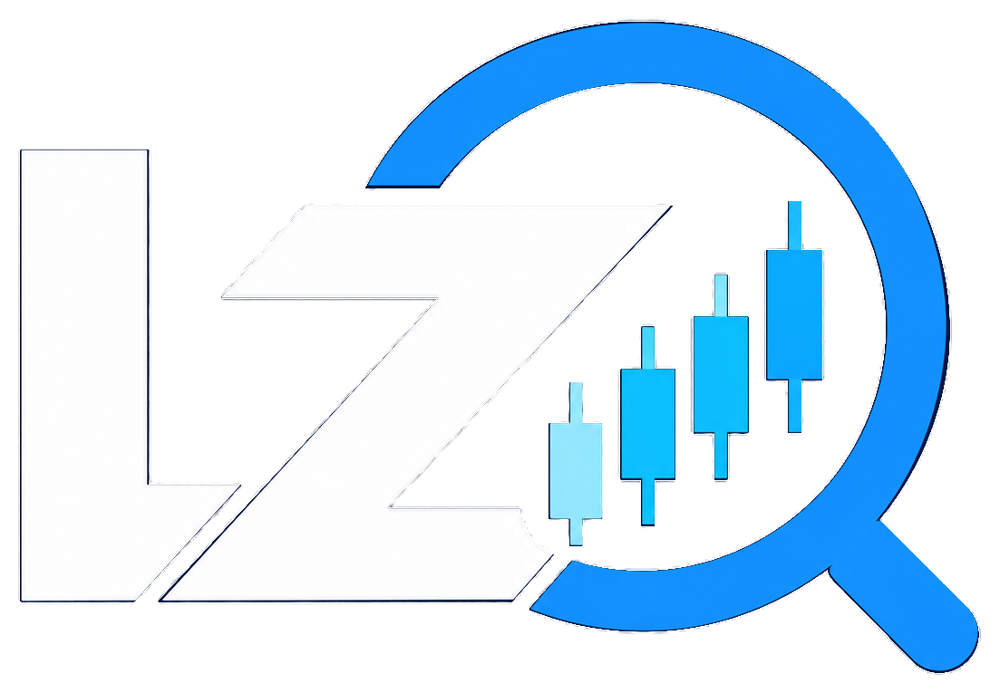

ASSET SNAPSHOT
资产状态总览
—
周线趋势——
日线状态——
基本面环境——

我的趋势观察
LZ-STAGESCOPE
正在载入资产数据
完成周期 · 风险优先 · 证据可追溯
正在读取资产信息
ASSET SNAPSHOT
—
—
| 日期 | 历史状态 | 触发价 | 7日后 | 14日后 | 状态说明 |
|---|
| 日期 | LZ-DCA | 资产价格 | 类别 | 详细信息 |
|---|
—
每项因素按自己的实际发布频率更新。“未更新”不会被解释成中性，方向也不会合并成不透明的买卖分数。
FRAMEWORK & DATA
LZ-4Stage 只使用完整周线，识别当前阶段、转换状态和阶段证据。
LZ-Status-V3 只使用确认收盘日线，展示趋势、交通灯、波动与融合状态。
LZ-DCA V1.1 使用确认收盘日线，独立生成六档定投建议和重要信号点。
利率、美元、资金流和事件各自保留来源、观察日期与更新频率。
系统不强行生成综合分数，而是明确展示周线、日线、定投与基本面之间的共振或冲突。
本项目用于研究与信息整理，不构成投资建议。历史阶段与状态不能保证未来表现。
先选择资产分类，再查询数据源。个人自选最多 30 个。
登录会员账号后查看全部资产。
会员账号有效